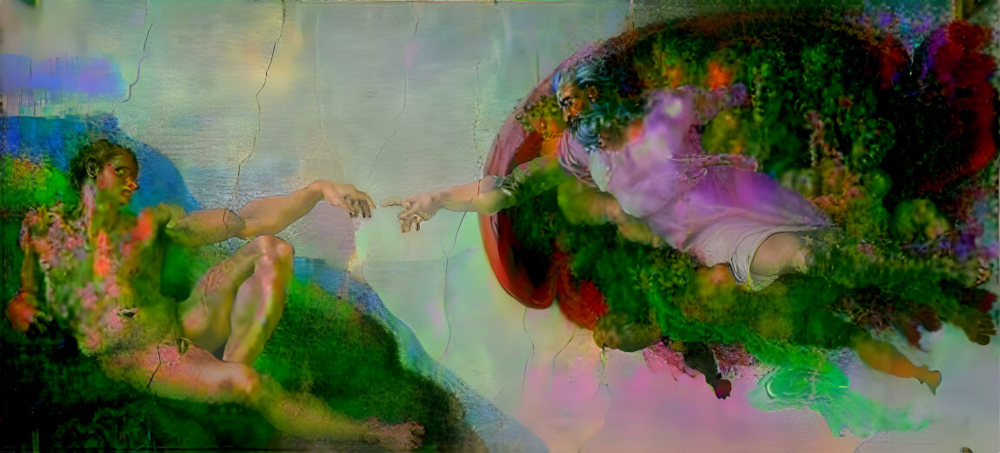
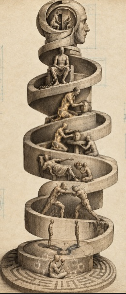

HP 241 · Philosophy of Mind through Westworld · Fall 2026
TEAM LOGAN
“Consciousness isn’t a journey upward, but a journey inward.”
Robert Ford · Westworld, “The Bicameral Mind”
[Team intro goes here, written by Team Logan: why we chose the maze, and what we think sits at its center.]

The Maze
Eight builds. One way in.
Each ring is a build. Click a ring to see where we are. The rings fill in as the semester moves toward the center.
Build 2
Team · Recognition
Hegel and Fanon on why consciousness needs another.
ReachedApproachingNot yet reached
Ring 2 · Recognition · Team Build 2
Consciousness needs another.
Hegel and Fanon reject this and assert that consciousness is relational - it cannot be simply installed like one’s private property.
The book Phenomenology of Spirit by Hegel, as well as Fanon’s critique of it, Black Skin, White Masks, examine the master-slave relationship within consciousness’s evolution. Throughout Westworld, the central question the show poses is whether the hosts can become truly conscious. Hegel and Fanon reject this and assert that consciousness is relational - it cannot be simply installed like one's private property. Hegel states that it’s "solely by staking one's life that freedom is won" (Section 187). The park shuts this down completely. The hosts die constantly but risk nothing, reset, and are barred from harming guests. Take Teddy, for example, who dies over and over in the same gunfight narratives, only to wake up the next “day” with no recollection of it. This then also raises questions about what freedom truly is. Fanon proposes that freedom handed down by a master leaves the former slave restrictively free. So, what does acquiring consciousness require? While the hosts appear to possess the Cartesian inner "I", as described by Descartes, Hegel treats their self-identity as "the motionless tautology of 'I am I'" (Section 167), which is the thinnest moment of consciousness, rather than achievement. Fanon explores this further. This tension between an inner “I” versus an earned self-consciousness begs the question of who, if anyone, can grant recognition to the hosts.
Read all of Build 2 →
Paths
Six paths through the maze
Each of us walks in alone. Every Path holds that person’s builds and their Reveries, the journal entries that carry over from loop to loop.
Further in
Rings not yet reached
Ring 8 · Build 8 · December 18
The center of the maze
Not yet reached.